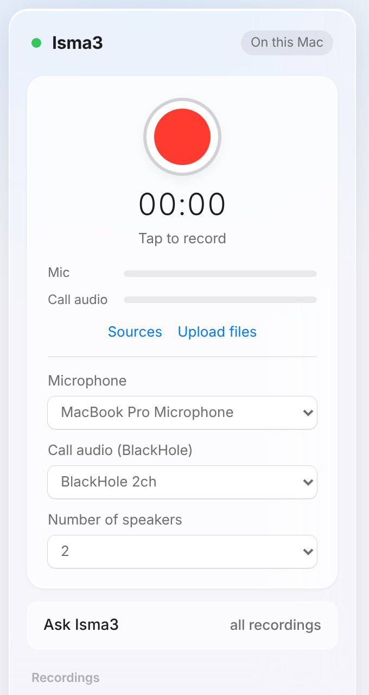
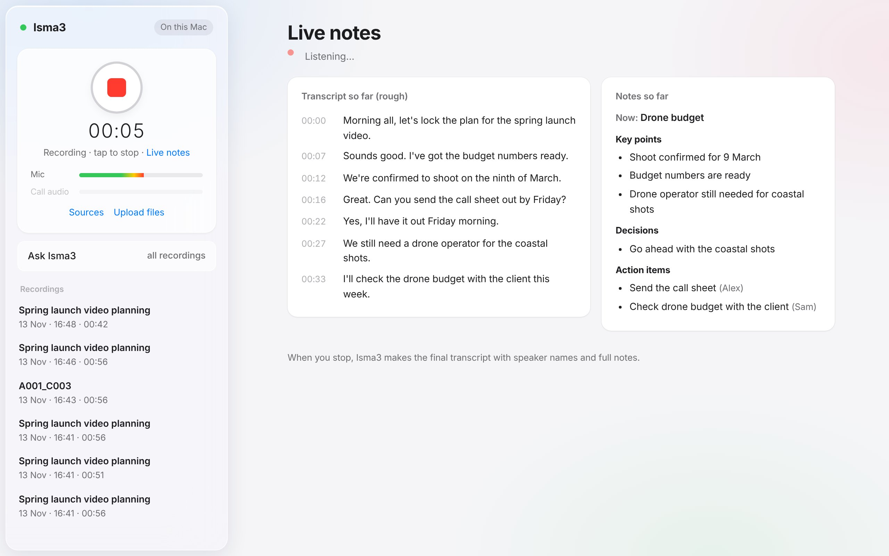
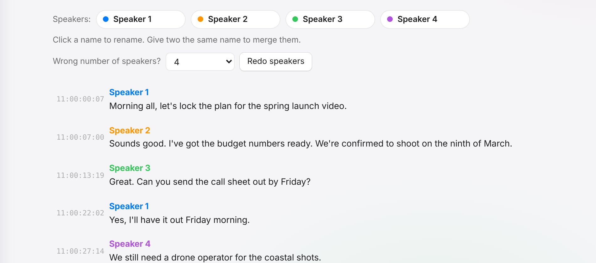
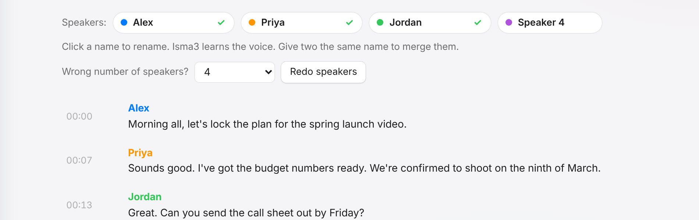
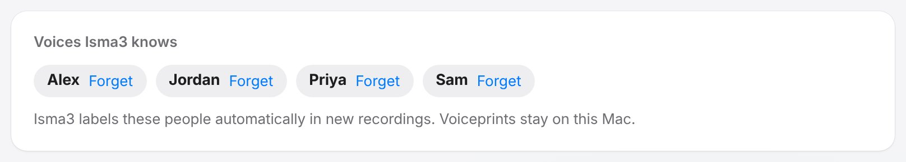
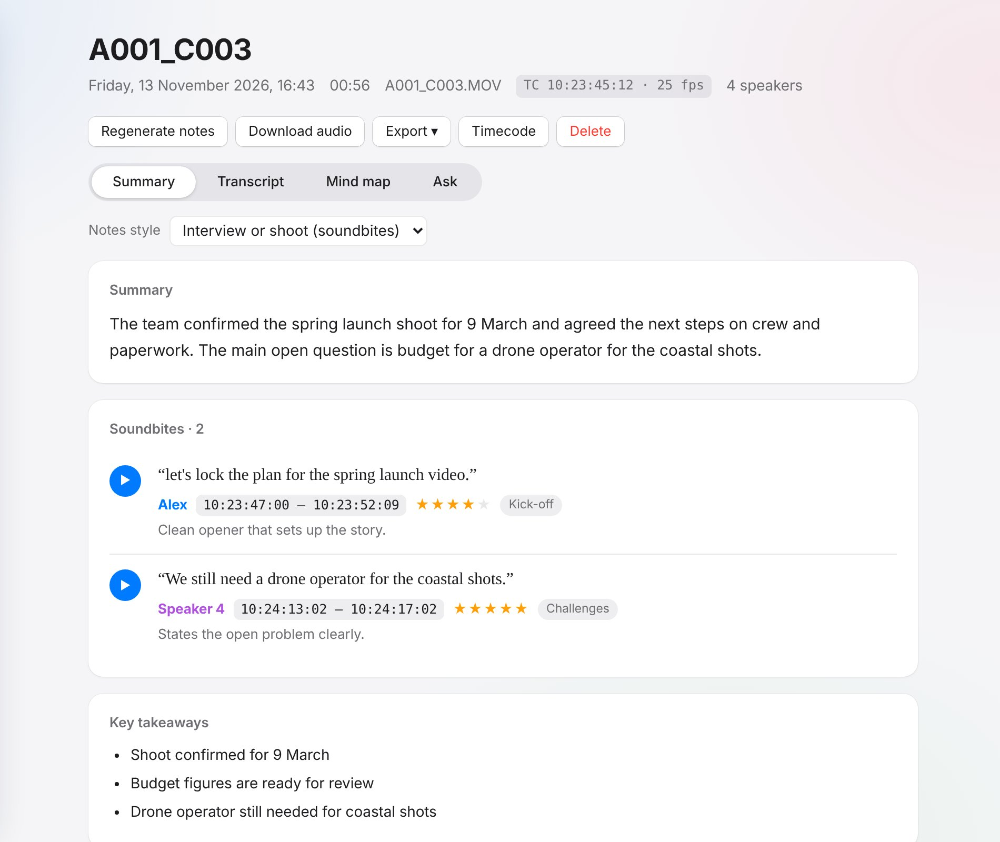
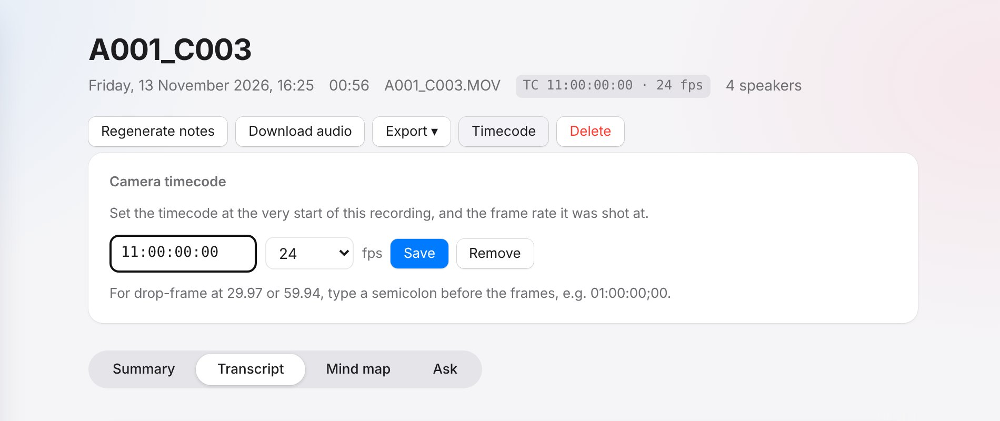
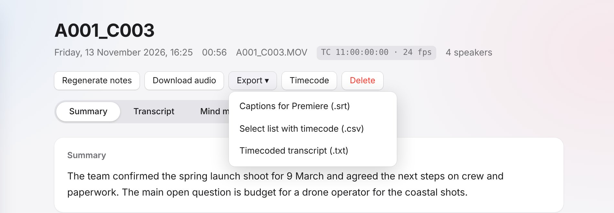

Isma3 User Guide
Everything you need to record conversations and calls, get clean notes, and take transcripts into the edit. It all happens on your Mac.
Install
You need a Mac with Apple Silicon (M1 or newer), 16 GB of memory and about 15 GB of free space. Allow around 30 minutes, which is mostly waiting for downloads.
- Open Terminal. Press ⌘ Space, type Terminal and press Return.
- Paste this line and press Return. It downloads Isma3 into an
Isma3folder in your home folder, then starts the installer.curl -fsSL https://raw.githubusercontent.com/salah896-netizen/isma3/main/get.sh | bash - Answer the installer's questions. It asks for your first name (for the greeting), your Obsidian vault (optional; press Return to skip) and your Mac password, once or twice. Nothing appears on screen as you type your password. That's normal.
- Wait for "All done". The installer sets up Homebrew, ffmpeg, Python, BlackHole (for calls), Ollama and the AI models, then adds Isma3 to your Applications.
Isma3. macOS blocks downloaded scripts, so you'll still need Terminal once: run cd ~/Isma3 && xattr -dr com.apple.quarantine . && ./install.command.Your first recording
- Press ⌘ Space, type Isma3 and press Return. Isma3 opens in its own window.
- To keep it handy, right-click its Dock icon and choose Options → Keep in Dock.
- Click the red button and allow microphone access the first time. Speak for a minute, then click again to stop.
- Watch the steps tick through: Transcribing, Identifying speakers, Writing summary. The first run is slower while the models load.
Updating
Run the install line again. It updates the app and leaves your recordings, settings and models alone.
After an update, close the Isma3 window and open Isma3 again. If the app ever says "Isma3 has been updated", do the same.
Record in person
Click the red button, or press ⌥ Space while Isma3 is in front. The Mic level bar moves as people talk.
Open Sources to:
- choose the microphone, e.g. a USB mic or lavalier receiver
- set the number of speakers. If you know it's two people, say so. It's the biggest single accuracy boost.
When you stop, processing starts straight away. You can start another recording while it works.

Live notes
While you record, Isma3 shows a rough transcript a few seconds behind the speech. After the first few sentences, it adds rolling notes: what's being discussed now, key points, decisions and action items.

- Live notes open automatically when you press record. If you look at another recording, click Live notes under the timer to get back.
- The live text has no speaker names and may have small errors. When you stop, Isma3 does its full pass and replaces it with the final transcript, speaker names and complete notes.
- To turn live notes off, untick Sources → Live notes while recording. Your Mac works harder while they're on, so expect the fans on long calls.
Record calls
Isma3 records your microphone (you) and BlackHole (everyone else, taken from your Mac's sound output) together. No bot joins the call.
One-time setup (2 minutes)
- Open Audio MIDI Setup (⌘ Space, then type "Audio MIDI").
- Click + at the bottom left and choose Create Multi-Output Device.
- Tick your headphones or speakers first, then BlackHole 2ch. Turn on Drift Correction for BlackHole.
- Double-click the device's name and rename it Isma3 Calls.
Before each call
- System Settings → Sound → Output: choose Isma3 Calls.
- In Isma3, open Sources and set Call audio to BlackHole 2ch. Isma3 remembers this.
- Press record. Both bars should move: Mic when you talk and Call audio when they do.
- After the call, switch your output back to normal so the volume keys work again.
| App | Setting |
|---|---|
| Zoom | Settings → Audio → Speaker: Same as System |
| Microsoft Teams | Settings → Devices → Speaker: Isma3 Calls (Teams ignores the system choice) |
| Use the Mac app or WhatsApp Web. Calls on your iPhone don't reach the Mac, so they can't be captured. | |
| FaceTime and iPhone calls | Calls you answer on the Mac are captured. |
Upload files
Click Upload files to add audio or video recorded elsewhere. You can select several at once, and each becomes its own recording.
- Voice memos and audio: m4a, mp3, wav and more.
- Camera clips: MOV, MP4 and MXF. Isma3 keeps only the audio and deletes its copy of the video, so footage doesn't fill your disk. Your original files are never touched.
- Sound recorder WAVs (e.g. Zoom or Sound Devices) keep their timecode too.
Summary, actions and mind map
Each recording has four tabs:
| Tab | What's there |
|---|---|
| Summary | A short summary, key takeaways and action items with owners and due dates. Tick items off as you go. |
| Transcript | Who said what, with timestamps. Click a timestamp to hear that moment. |
| Mind map | The main topics at a glance. Click a topic to fold it away. |
| Ask | Questions about this one recording, e.g. "Draft a follow-up email". |
Click the title to rename a recording. Regenerate notes rewrites the summary, e.g. after you've named the speakers.

Fix speakers

- Name people: click "Speaker 1" and type a name. Press Regenerate notes afterwards so the summary uses the real names.
- One person split in two: give both the same name and they merge.
- Wrong number of people: pick the right number under Wrong number of speakers? and press Redo speakers. It re-labels everyone without re-transcribing.
- Best fix: set Sources → Number of speakers before recording.
Voices it remembers
When you name someone in a transcript, Isma3 saves a voiceprint for them. In future recordings it labels them automatically. A ✓ next to a name shows it was recognised.

- Isma3 only fills in a name when the match is clear. If it isn't sure, you'll see "Speaker 2" rather than a wrong name.
- The more recordings someone is named in, the better Isma3 recognises them. It keeps up to 12 samples per person.
- Your own voice is learnt automatically from call recordings, so you're recognised in person too.
- To see or remove voices, use Voices Isma3 knows on the home screen and press Forget.

~/Isma3/data/voices.json and are never uploaded. Tell colleagues if you're keeping theirs, and forget anyone who asks. To switch the feature off, set "remember_voices": false in config.json.Ask Isma3
Ask Isma3 in the sidebar searches every recording. Try questions like:
- "What did I promise to do this week?"
- "When did we last talk about the budget?"
Answers cite their sources, and clicking a citation jumps to that moment in the audio.

Obsidian
If you gave the installer an Obsidian vault, each recording also becomes a note in an Isma3 folder in your vault. The note has the summary, tick-box action items, a mind-map outline and the full transcript. Renaming speakers updates the note.
To turn this on later, edit ~/Isma3/config.json (see Settings).
Interview mode
For interviews and shoots, Isma3 acts like a producer logging the rushes. Besides the usual summary, it picks the best soundbites: clear, quotable lines that work without the question.

- Camera clips switch to interview mode automatically. To choose for everything else, use Sources → Notes style.
- To change a recording, pick Notes style at the top of its Summary tab. Isma3 rewrites the notes.
- In and out points come from word timings, so each soundbite starts and ends on the quote, not the whole answer.
- Export → Soundbites with timecode (.csv) gives you a ready-made selects list: stars, TC in and out, speaker, quote, theme and why it works.
Camera timecode
When you upload a camera clip, Isma3 reads the clip's timecode and frame rate. Every transcript line then shows camera timecode, so you can find any line in the footage.

Set or correct timecode by hand
- Open the recording and click Timecode (or Add timecode).
- Type the timecode at the very start of the file, e.g.
10:00:00:00. - Choose the frame rate (23.976, 24, 25, 29.97, 30, 50, 59.94 or 60) and press Save.
For drop-frame at 29.97 or 59.94, type a semicolon before the frames: 01:00:00;00.

Premiere Pro
Open the recording and click Export:

| Export | Use it for |
|---|---|
| Captions for Premiere (.srt) | Captions with speaker names, split into caption-sized lines. |
| Select list with timecode (.csv) | Every line with TC in, TC out, speaker and text. It opens in Excel, Numbers or Google Sheets, so you can highlight selects and build a paper edit. |
| Soundbites with timecode (.csv) | Interview mode's picks, strongest first by stars, with TC in and out. Use it as your selects list. |
| Timecoded transcript (.txt) | The summary, action items and the full transcript stamped with camera timecode, ready to send to an editor or client. |
Import the captions into Premiere
- In Premiere, right-click the clip and choose New Sequence From Clip. The sequence starts at the clip's first frame.
- File → Import the
.srtfile, then drag it onto the sequence at the very start. - The captions line up with the speech. Use them to scrub and find lines, or style them as burnt-in subtitles.
Settings
Settings live in ~/Isma3/config.json. Open it with any text editor, then close and reopen Isma3.
| Setting | What it does |
|---|---|
name | Your name, used in the greeting. |
obsidian_vault | Your vault folder, e.g. ~/Documents/My Vault. Leave it empty to switch Obsidian off. |
obsidian_folder | The folder inside the vault. Default: Isma3. |
language | null detects the language automatically, or set one, e.g. "en" or "ar". |
llm_model | The model behind summaries and Ask. qwen3:14b is the default. qwen3:8b is faster on 16 GB Macs. Run ollama pull <name> first. |
live_llm_model | The faster model behind live notes. qwen3:8b is the default. If it isn't downloaded, the main model is used. |
remember_voices | true or false: turns voice memory on or off. |
voice_match_threshold | How sure Isma3 must be before naming someone automatically. Default 0.55. Raise it if it guesses wrong. |
speaker_threshold | Raise it (e.g. 1.0) if one person keeps being split in two, and lower it (e.g. 0.8) if different people are merged. |
Troubleshooting
| Problem | Fix |
|---|---|
| "Couldn't reach Ollama" | Open the Ollama app (llama icon), then press Retry on the recording. |
| "Isma3 has been updated" or "Not Found" | Close the Isma3 window and open Isma3 again. |
| The Mic bar doesn't move | System Settings → Privacy & Security → Microphone → allow Google Chrome (or your browser). |
| The Call audio bar doesn't move | Check that the output is Isma3 Calls and that Call audio is set to BlackHole 2ch. For Teams, also set its speaker to Isma3 Calls. |
| Voices appear twice | Wear headphones on calls. |
| The wrong number of speakers | See Fix speakers. |
| macOS says it can't verify Isma3 | Right-click Isma3 in Applications, choose Open, then Open again. You only need to do this once. |
| Live notes say "Catching up" | Your Mac is busy, often finishing an earlier recording. It catches up on its own, and the final notes are unaffected. |
| Someone was recognised as the wrong person | Rename them. Isma3 moves that voice sample to the right person. |
| Something failed mid-way | Press Retry. The audio is always kept. |
Privacy
Isma3 has no account and no cloud. Recordings, transcripts and notes stay in ~/Isma3/data on your Mac, and the AI models run locally. After installation it works offline.
To delete a recording, hover over it in the sidebar and click the bin, or open it and press Delete. To delete several at once, click Select above the list, tick them, then press Delete. Deleting can't be undone.
Deleting a recording in Isma3 removes it from that folder. Its Obsidian note, if any, stays where it is.